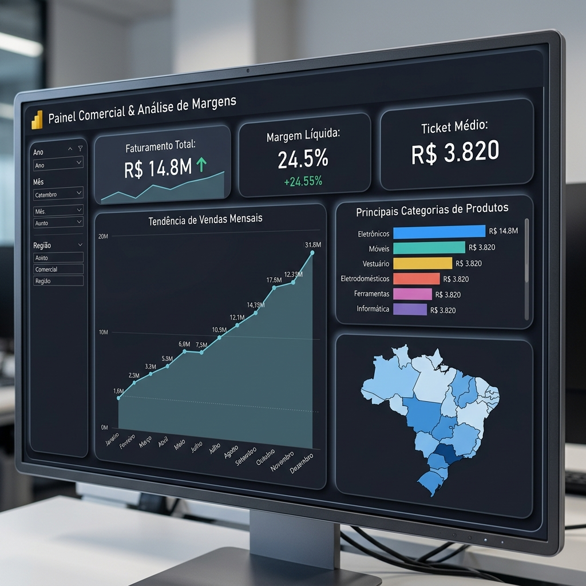
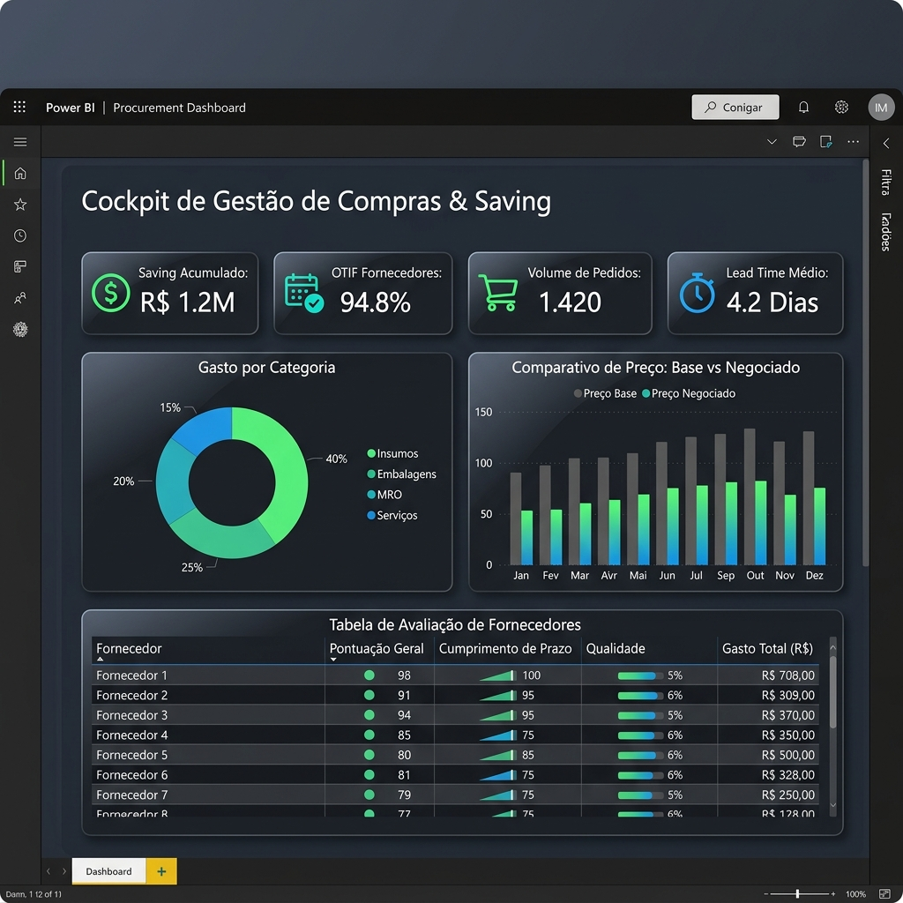
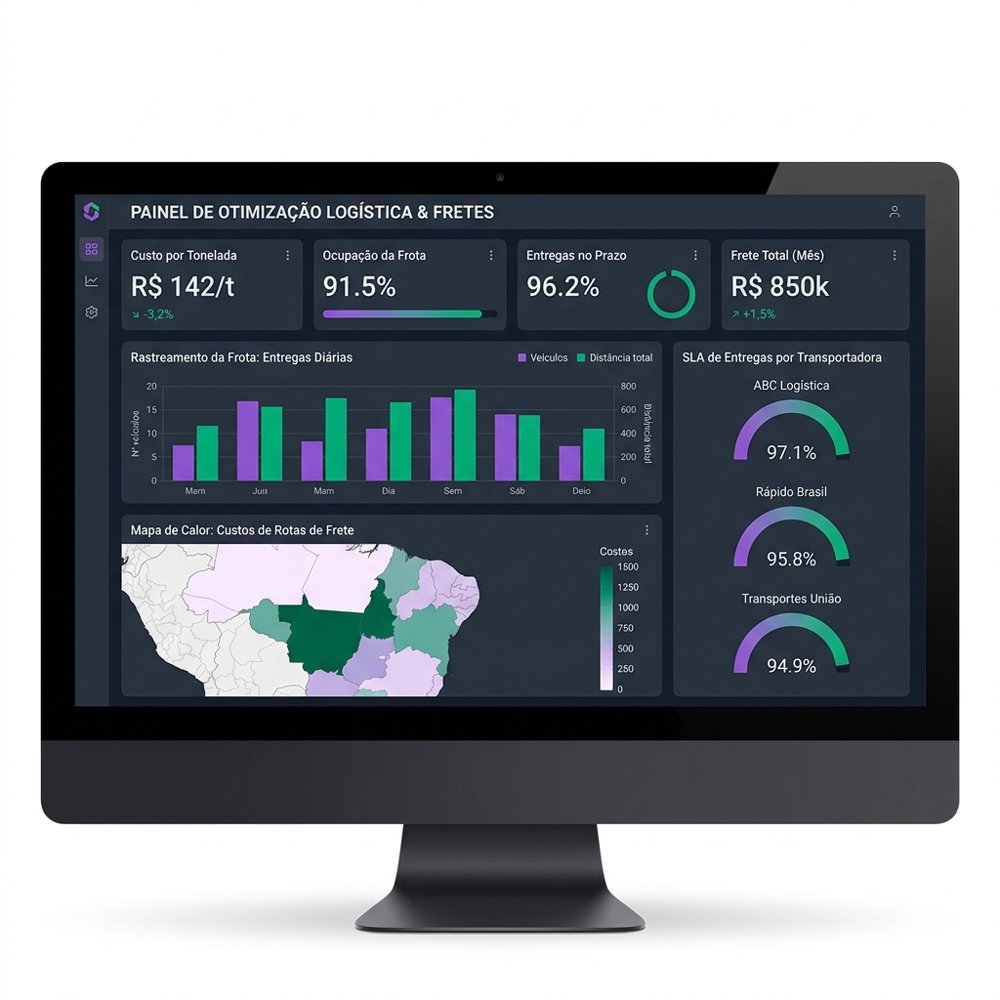
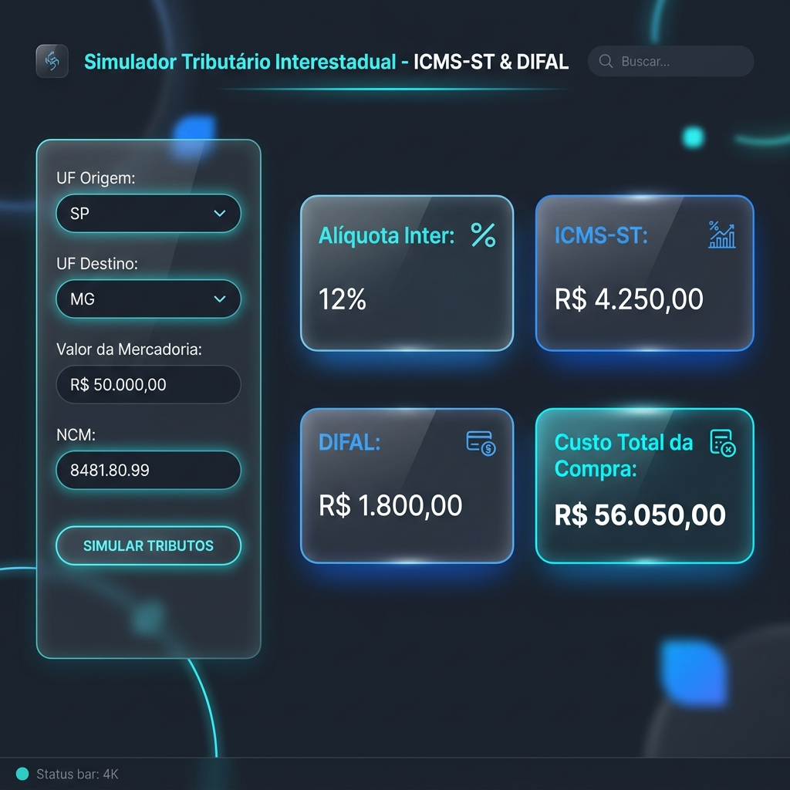
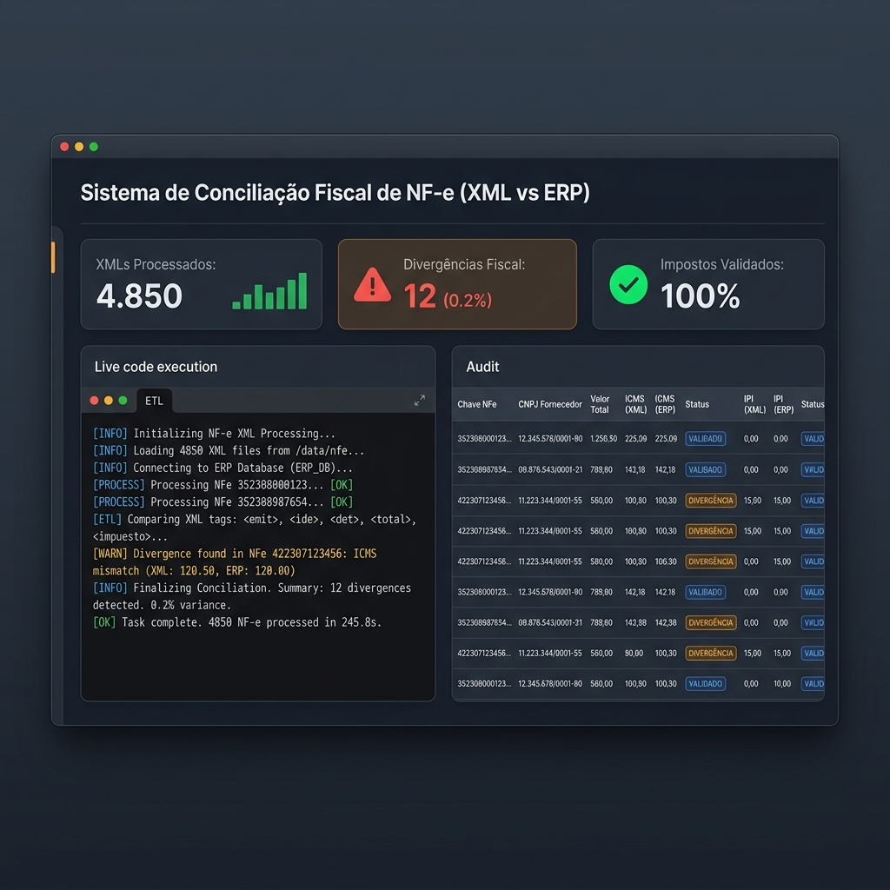
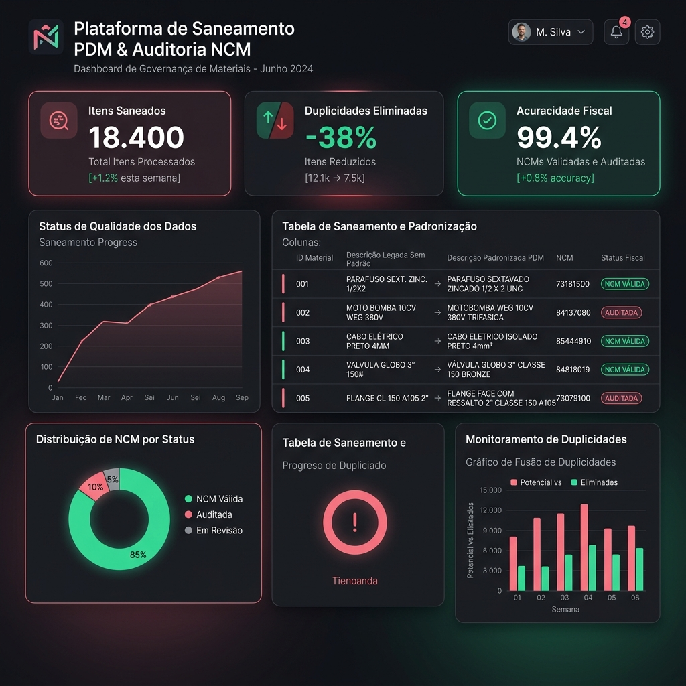
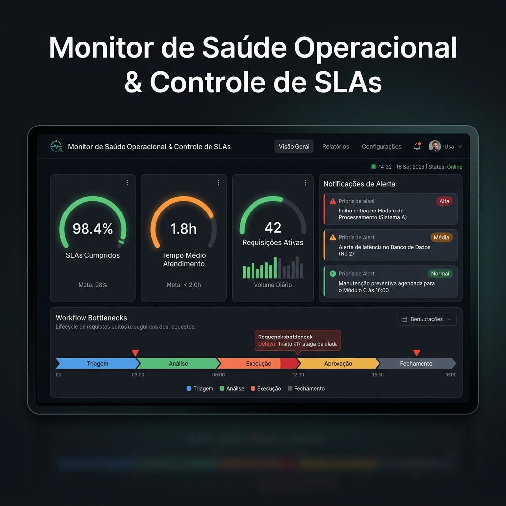
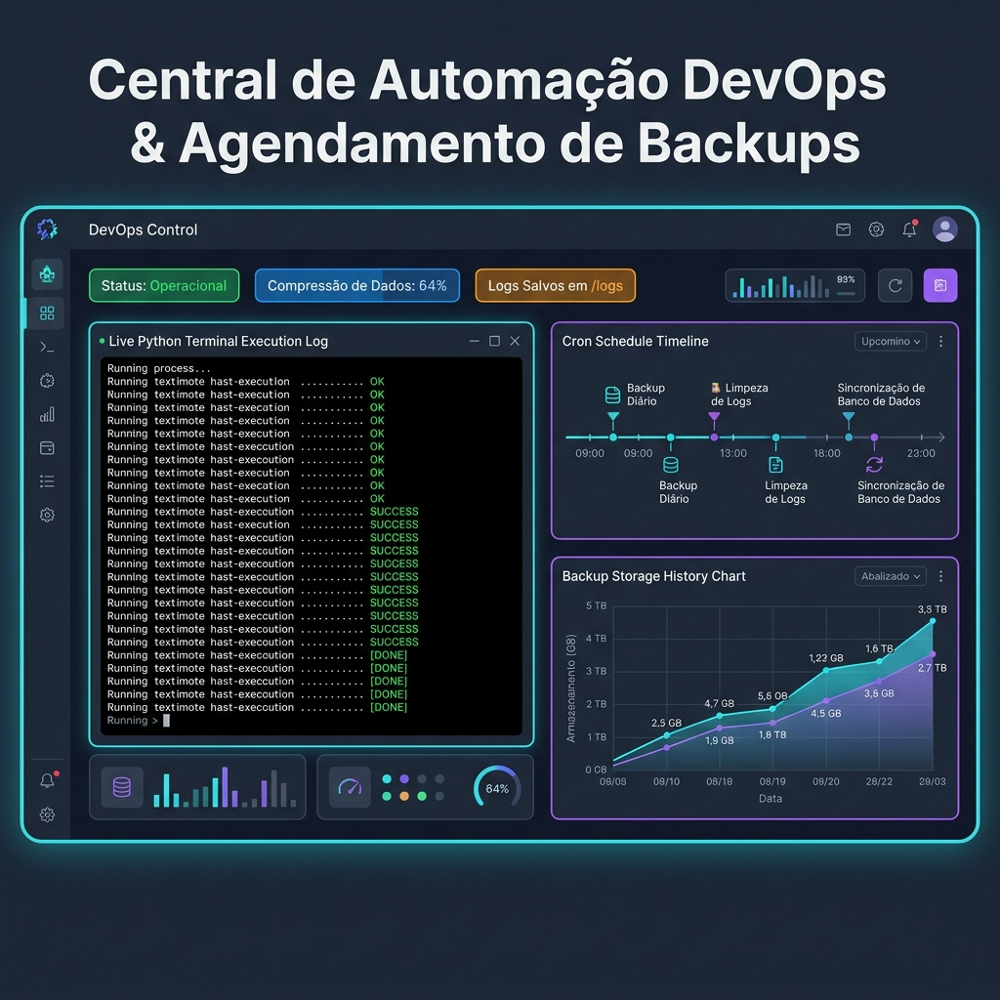

Compras | Procurement | Strategic Sourcing | Gestão de Contratos | Negociações Estratégicas
Profissional com perfil híbrido: uno a visão estratégica de mais de 10 anos em Supply Chain com o poder de execução da Tecnologia e Análise de Dados. Especialista em traduzir regras complexas de negócio em automações, higienização de banco de dados e sistemas web que reduzem custos e eliminam gargalos operacionais.

Conheça a formação e experiência de Fabrício Oliveira Silva divididas entre Desenvolvimento de Software / Automações e Gestão de Suprimentos / Compras.
Capacitação em Python (Machine Learning, Pandas, Flask), automação de fluxos com N8N e Power Automate, modelagem relacional SQL e visualização interativa no Power BI.
Sólida carreira de mais de 10 anos passando por empresas como Barra Mansa Alimentos, SuperFrio Logística, Resolv, JAB Isolantes e Gotherma.
+R$ 1.2M
Redução direta de custos obtida em negociações estratégicas.
40+ Unidades
Abastecimento de materiais diretos/indiretos em nível nacional.
100% Automação
Scripts Python para saneamento de dados e conciliação de NF-e.
27 Projetos
27 repositórios mapeados com soluções de software, automações ETL e dashboards.

Plataforma analítica desenvolvida para rastreabilidade de faturamento, margem de contribuição por linha de produto e ticket médio regional. Utiliza inteligência temporal em DAX e queries SQL para apoiar tomadas de decisão comerciais de alto impacto.

Cockpit de gestão estratégica de suprimentos para acompanhamento em tempo real de ordens de compra emitidas no ERP TOTVS, acuracidade de fornecedores (OTIF), saving negociado acumulado (R$ 1.2M+) e spend por categoria de insumos (MRO e embalagens).

Dashboard de inteligência logística desenhado para otimização do custo por tonelada transportada, análise de ocupação volumétrica de frota frigorificada, acompanhamento de janelas de transferência e redução de estouros de frete rodoviário.

Aplicação web em Python/Flask que automatiza o cálculo de ICMS-ST (MVA ajustada) e DIFAL no momento em que o comprador cota com fornecedores fora do estado, entregando o custo líquido desembolsado e evitando divergências fiscais na entrada.

Pipeline em Python para parsing em lote de arquivos XML de notas fiscais eletrônicas. Extrai valores de impostos (ICMS, IPI, PIS/COFINS), itens e totais, cruzando automaticamente contra o pedido no ERP para identificar incoerências fiscais de imediato.

Algoritmo de higienização de cadastros legados de materiais (PDM). Aplica regras de lógica textual e correspondência em Python/Pandas para unificar códigos de itens MRO duplicados no estoque e auditar classificações fiscais de NCM.

Painel analítico para governança do fluxo de requisições de compras. Monitora em tempo real a aderência a prazos (SLA) por comprador, mapeando gargalos de alçada de aprovação e emitindo alertas visuais para prevenção de paradas de fábrica.

Script utilitário em Python para execução de rotinas automáticas de compactação, rotação e cópia de segurança de bases de dados. Possui estrutura resiliente de erros com registro de logs detalhados na pasta `/logs`.